Code Time
可用Code Time 累计时长，对应 Coding 分类。


引用代码
选择图表，复制到你的主页、博客或 README。
Code Time 累计时长，对应 Coding 分类。
AI Code Time 累计时长，对应 AI Coding 分类。
Total Activity 累计时长，包含所有活动分类与 Other 语言。
编辑器来源 Codex Vscode 的累计时长。
编辑器来源 VS Code 的累计时长。
编辑器来源 Codex CLI 的累计时长。
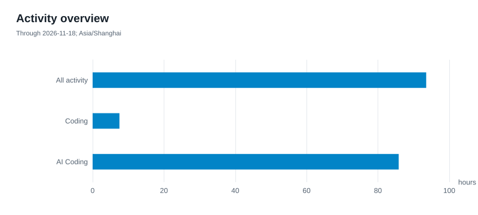
累计全部活动、Coding 与 AI Coding 分类时长。
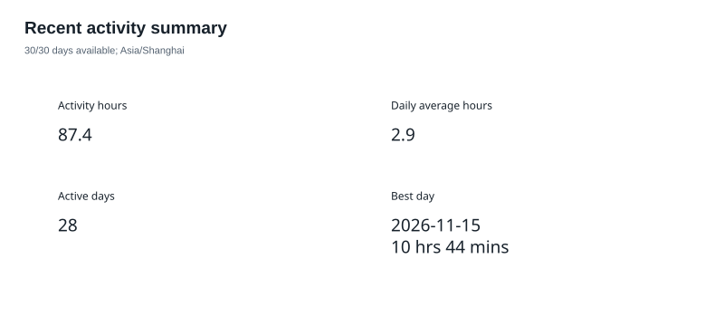
最近 30 天已取得记录的总活动、按记录天数计算的日均、活跃天数和最高活动日。
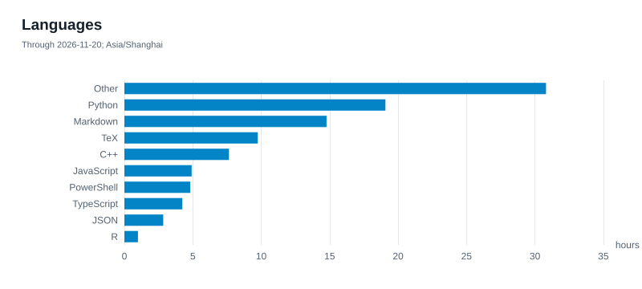
按累计活动小时排列，显示前十项。
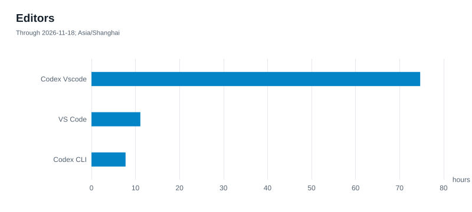
按累计活动小时排列，显示前十项。
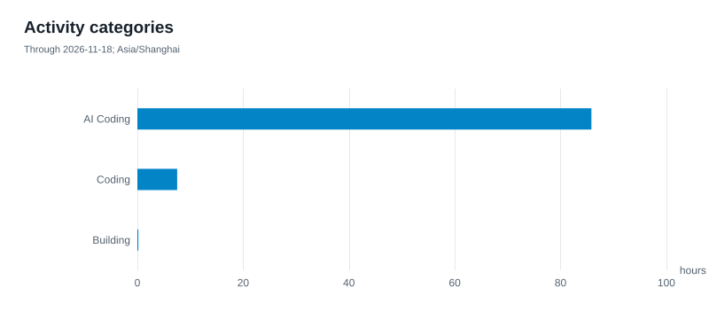
按累计活动小时排列，显示前十项。
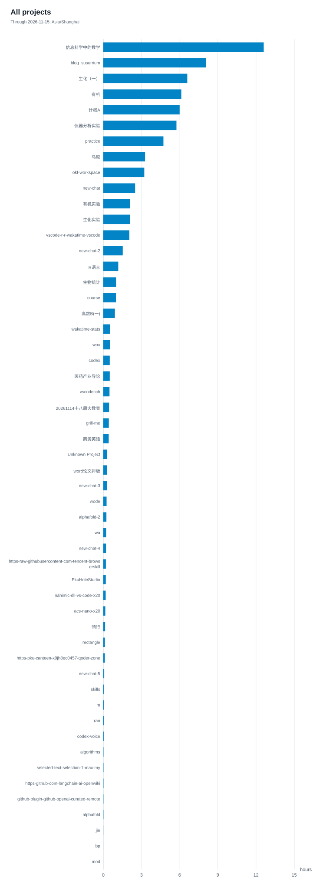
按累计活动小时排列，展示 WakaTime 返回的全部项目。
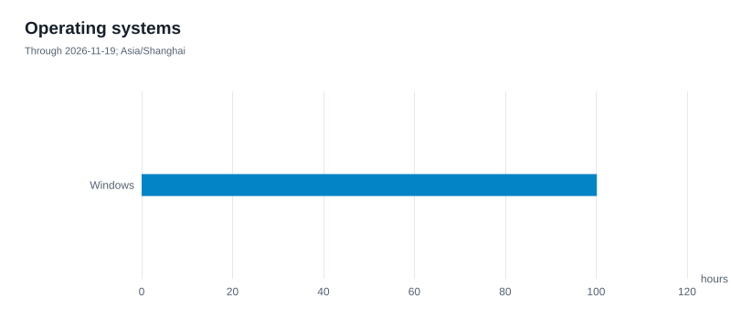
按累计活动小时排列，显示前十项。
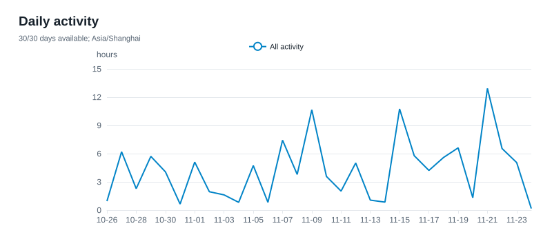
每日全部活动小时；缺失日期保留间隔。
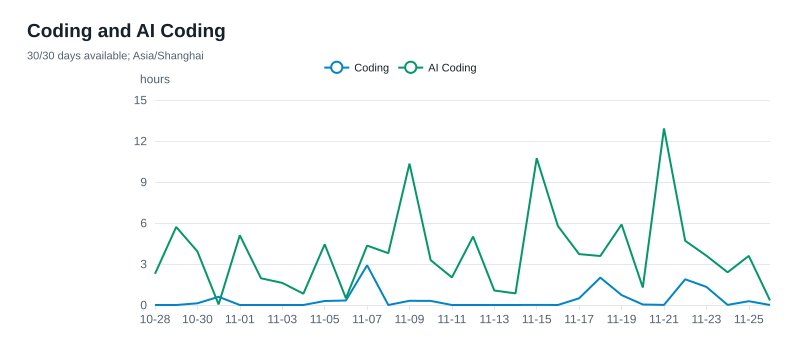
每日 Coding 与 AI Coding 分类小时。
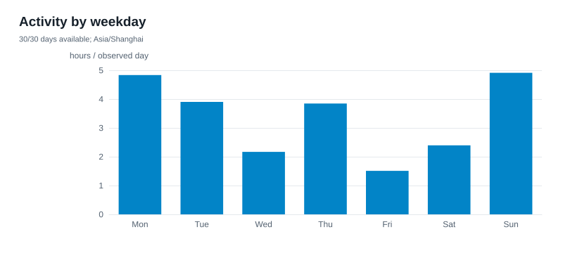
最近 30 天各星期的平均活动小时，分母仅含已取得数据的日期。
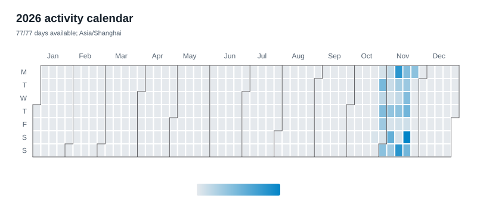
每天的全部活动小时，空白表示尚无已验证记录。
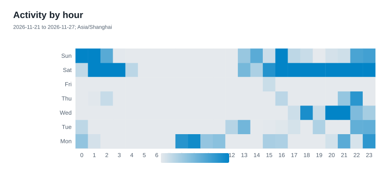
已取得的日内活动区间按本地小时切分；重叠区间沿用来源统计口径。
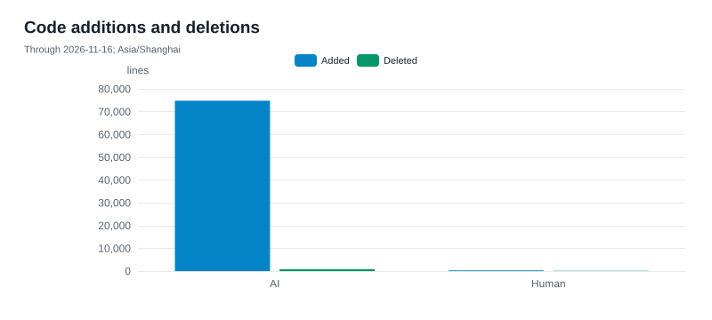
来源报告的 AI 与人工代码新增、删除行数。
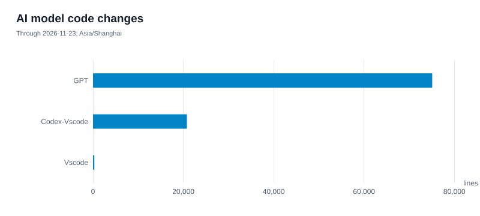
按模型报告的指标排行。
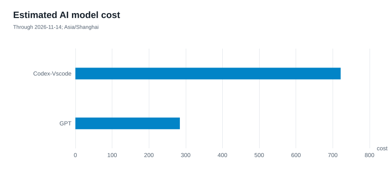
按来源 Token 价格估算的美元费用。
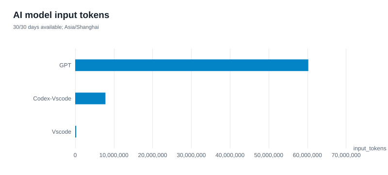
最近 30 天每日汇总中可用的模型 Token 累计量。
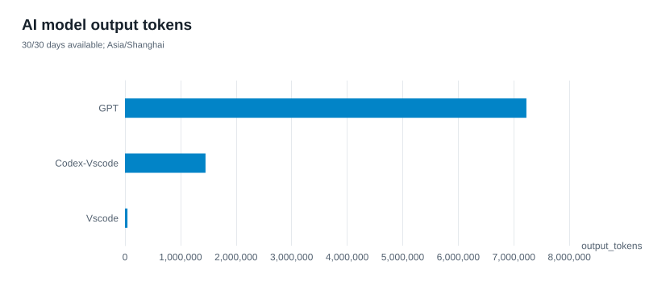
最近 30 天每日汇总中可用的模型 Token 累计量。
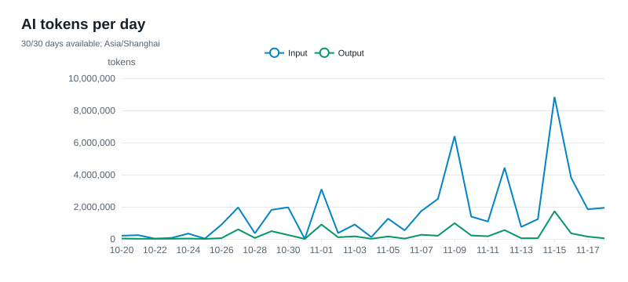
每日输入与输出 Token，缺失字段保留空白。
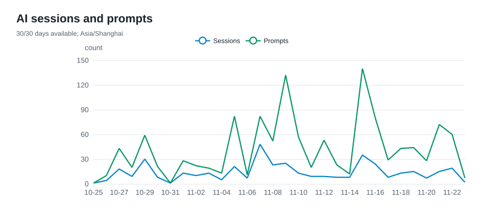
每日会话数与提示次数；跨日会话分别按当天来源统计。
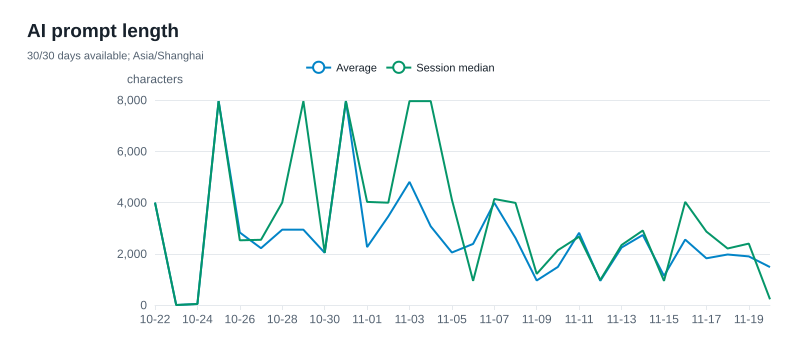
每日提示平均字符数及按会话汇总的中位数。
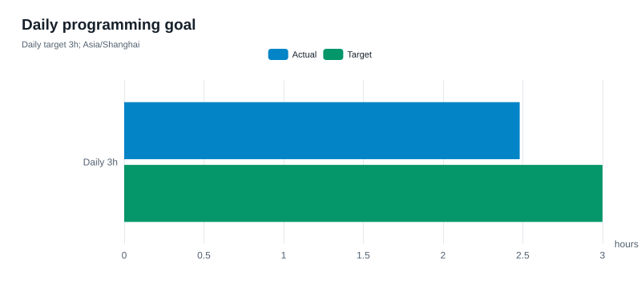
WakaTime 中实际启用的每日 3 小时目标，范围包含全部项目、语言和编辑器及每天。
没有符合筛选条件的图表。